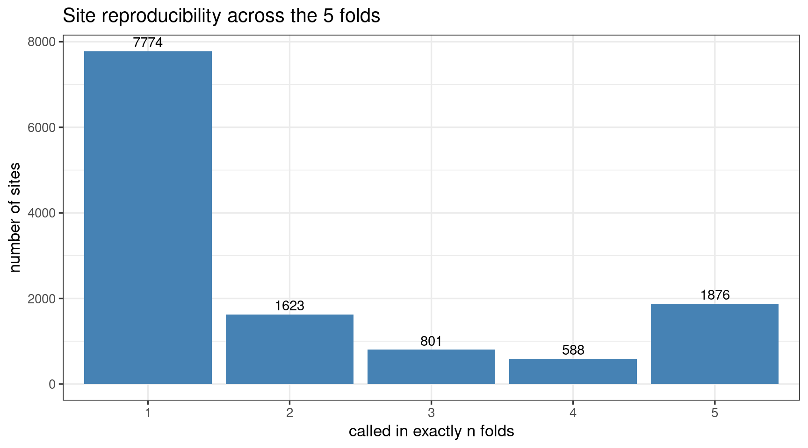
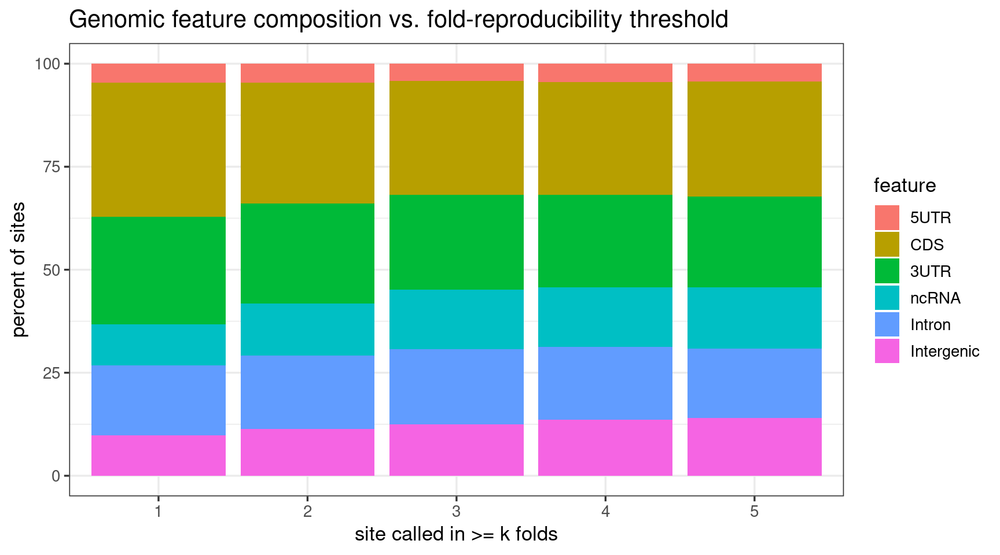
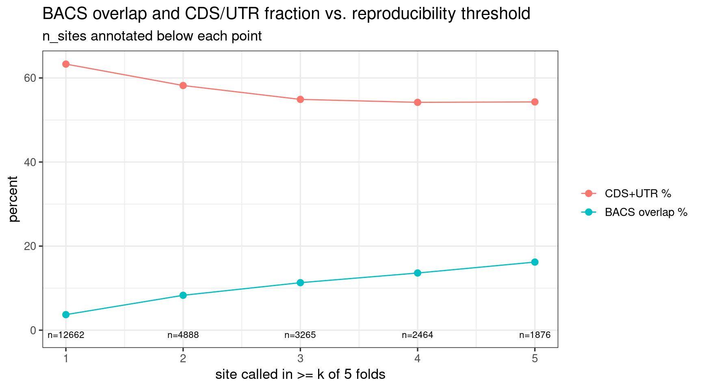

Last updated: 2026-07-14
Checks: 6 1
Knit directory: pumseq/
This reproducible R Markdown analysis was created with workflowr (version 1.7.0). The Checks tab describes the reproducibility checks that were applied when the results were created. The Past versions tab lists the development history.
The R Markdown is untracked by Git. To know which version of the R
Markdown file created these results, you’ll want to first commit it to
the Git repo. If you’re still working on the analysis, you can ignore
this warning. When you’re finished, you can run
wflow_publish to commit the R Markdown file and build the
HTML.
Great job! The global environment was empty. Objects defined in the global environment can affect the analysis in your R Markdown file in unknown ways. For reproduciblity it’s best to always run the code in an empty environment.
The command set.seed(20260202) was run prior to running
the code in the R Markdown file. Setting a seed ensures that any results
that rely on randomness, e.g. subsampling or permutations, are
reproducible.
Great job! Recording the operating system, R version, and package versions is critical for reproducibility.
Nice! There were no cached chunks for this analysis, so you can be confident that you successfully produced the results during this run.
Great job! Using relative paths to the files within your workflowr project makes it easier to run your code on other machines.
Great! You are using Git for version control. Tracking code development and connecting the code version to the results is critical for reproducibility.
The results in this page were generated with repository version 2f584df. See the Past versions tab to see a history of the changes made to the R Markdown and HTML files.
Note that you need to be careful to ensure that all relevant files for
the analysis have been committed to Git prior to generating the results
(you can use wflow_publish or
wflow_git_commit). workflowr only checks the R Markdown
file, but you know if there are other scripts or data files that it
depends on. Below is the status of the Git repository when the results
were generated:
Ignored files:
Ignored: analysis/qtl_mapping_summary_cache/
Untracked files:
Untracked: analysis/mRNA_5fold_union_site_calling.Rmd
Note that any generated files, e.g. HTML, png, CSS, etc., are not included in this status report because it is ok for generated content to have uncommitted changes.
There are no past versions. Publish this analysis with
wflow_publish() to start tracking its development.
library(data.table)
library(ggplot2)
knitr::opts_chunk$set(
echo = TRUE, warning = FALSE, message = FALSE,
fig.align = "center", fig.width = 9, fig.height = 5
)
ANNO <- "/project/xinhe/xsun/pumseq/pumseq_processed/joint/fold5_union_analysis/fold5_union_sites_annotated.txt.gz"
feat_levels <- c("5UTR", "CDS", "3UTR", "ncRNA", "Intron", "Intergenic")
N_FOLDS <- 5Instead of calling pU sites once from all cell lines pooled, we partition the 51 cell lines into 5 disjoint folds (~20% each; seed = 2026, so the partition is reproducible), joint-call sites within each fold (pool that fold’s ~10 cell lines’ reads, one chi-squared test per site, FDR < 0.01, rate_diff > 0.05, depth >= 20), then combine across folds and count how many of the 5 folds each site was called in.
This turns the number of folds into a reproducibility
filter: keeping sites called in >= k of 5
folds. k = 1 is the plain union (any fold); higher
k requires a site to reproduce across independent 20%
subsets. The motivation: the earlier discovery/replication analysis
showed only ~40-60% of sites called from a single 20% pool replicate, so
a plain union carries a lot of non-reproducible sites — requiring
>= k folds should filter them.
sites <- fread(ANNO, colClasses = list(character = c("ref", "strand")))
sites[, feature := factor(feature, levels = feat_levels)]
cat("Total unique sites across the 5 folds:", nrow(sites), "\n")Total unique sites across the 5 folds: 12662 nf <- sites[, .N, by = n_folds][order(n_folds)]
knitr::kable(nf, col.names = c("n_folds", "n_sites"),
caption = "Number of sites called in exactly n folds")| n_folds | n_sites |
|---|---|
| 1 | 7774 |
| 2 | 1623 |
| 3 | 801 |
| 4 | 588 |
| 5 | 1876 |
ggplot(sites, aes(x = factor(n_folds))) +
geom_bar(fill = "steelblue") +
geom_text(stat = "count", aes(label = after_stat(count)), vjust = -0.4) +
labs(x = "called in exactly n folds", y = "number of sites",
title = "Site reproducibility across the 5 folds") +
theme_bw(base_size = 13)
A large share of the union is single-fold sites — called by only one 20% subset. These are the sites a plain union would keep but that don’t reproduce.
>= k foldsthr <- rbindlist(lapply(1:N_FOLDS, function(k) {
sub <- sites[n_folds >= k]
data.table(
min_folds = k,
n_sites = nrow(sub),
pct_cds_utr = round(100 * mean(sub$feature %in% c("CDS", "5UTR", "3UTR")), 1),
pct_intron_intergenic = round(100 * mean(sub$feature %in% c("Intron", "Intergenic")), 1),
n_bacs = sum(sub$in_bacs),
pct_bacs = round(100 * mean(sub$in_bacs), 1)
)
}))
knitr::kable(thr, caption = "Sites called in >= k of 5 folds: count, CDS/UTR %, intron+intergenic %, BACS overlap")| min_folds | n_sites | pct_cds_utr | pct_intron_intergenic | n_bacs | pct_bacs |
|---|---|---|---|---|---|
| 1 | 12662 | 63.3 | 26.8 | 467 | 3.7 |
| 2 | 4888 | 58.2 | 29.2 | 404 | 8.3 |
| 3 | 3265 | 54.9 | 30.8 | 370 | 11.3 |
| 4 | 2464 | 54.2 | 31.3 | 335 | 13.6 |
| 5 | 1876 | 54.3 | 30.8 | 303 | 16.2 |
comp <- rbindlist(lapply(1:N_FOLDS, function(k) {
sub <- sites[n_folds >= k]
t <- as.data.table(prop.table(table(sub$feature)) * 100)
setnames(t, c("feature", "pct")); t[, min_folds := k]; t
}))
comp[, feature := factor(feature, levels = feat_levels)]
ggplot(comp, aes(x = factor(min_folds), y = pct, fill = feature)) +
geom_col() +
labs(x = "site called in >= k folds", y = "percent of sites", fill = "feature",
title = "Genomic feature composition vs. fold-reproducibility threshold") +
theme_bw(base_size = 13)
enr <- melt(thr[, .(min_folds, `CDS+UTR %` = pct_cds_utr, `BACS overlap %` = pct_bacs)],
id.vars = "min_folds")
ggplot(enr, aes(x = min_folds, y = value, color = variable)) +
geom_line() + geom_point(size = 2.5) +
geom_text(data = thr, aes(x = min_folds, y = -1, label = paste0("n=", n_sites)),
inherit.aes = FALSE, size = 3) +
scale_x_continuous(breaks = 1:N_FOLDS) +
labs(x = "site called in >= k of 5 folds", y = "percent", color = NULL,
title = "BACS overlap and CDS/UTR fraction vs. reproducibility threshold",
subtitle = "n_sites annotated below each point") +
theme_bw(base_size = 13)
>= 1) — 3.7%
BACS and dominated by non-reproducible single-fold sites.>= 2 folds is the natural minimum
(analogous to the existing n_called >= 2): it roughly
doubles BACS enrichment (8.3%) while keeping 4,888 sites — the largest
single jump in quality.>= 5 folds for maximum purity
(16.2% BACS) at the cost of dropping to 1,876 sites.The >= 2 to >= 5 range is the
precision-vs-sensitivity choice. Note this used the stricter FDR <
0.01 calling filter, so even >= 2 is fairly clean.
sessionInfo()R version 4.2.0 (2022-04-22)
Platform: x86_64-pc-linux-gnu (64-bit)
Running under: Red Hat Enterprise Linux 8.4 (Ootpa)
Matrix products: default
BLAS/LAPACK: /software/openblas-0.3.13-el8-x86_64/lib/libopenblas_skylakexp-r0.3.13.so
locale:
[1] LC_CTYPE=C.UTF-8 LC_NUMERIC=C LC_TIME=C.UTF-8
[4] LC_COLLATE=C.UTF-8 LC_MONETARY=C.UTF-8 LC_MESSAGES=C.UTF-8
[7] LC_PAPER=C.UTF-8 LC_NAME=C LC_ADDRESS=C
[10] LC_TELEPHONE=C LC_MEASUREMENT=C.UTF-8 LC_IDENTIFICATION=C
attached base packages:
[1] stats graphics grDevices utils datasets methods base
other attached packages:
[1] ggplot2_3.4.2 data.table_1.14.4 workflowr_1.7.0
loaded via a namespace (and not attached):
[1] tidyselect_1.2.0 xfun_0.38 bslib_0.3.1 colorspace_2.0-3
[5] vctrs_0.6.1 generics_0.1.3 htmltools_0.5.7 yaml_2.3.5
[9] utf8_1.2.2 rlang_1.1.2 R.oo_1.24.0 jquerylib_0.1.4
[13] later_1.3.0 pillar_1.9.0 glue_1.6.2 withr_2.5.0
[17] R.utils_2.11.0 lifecycle_1.0.4 stringr_1.5.0 munsell_0.5.0
[21] gtable_0.3.0 R.methodsS3_1.8.1 evaluate_0.15 labeling_0.4.2
[25] knitr_1.42 callr_3.7.0 fastmap_1.1.0 httpuv_1.6.5
[29] ps_1.7.0 fansi_1.0.3 highr_0.9 Rcpp_1.0.11
[33] promises_1.2.0.1 scales_1.2.0 jsonlite_1.8.7 farver_2.1.0
[37] fs_1.5.2 digest_0.6.29 stringi_1.7.6 processx_3.5.3
[41] dplyr_1.1.2 getPass_0.2-2 rprojroot_2.0.3 grid_4.2.0
[45] cli_3.6.2 tools_4.2.0 magrittr_2.0.3 sass_0.4.1
[49] tibble_3.2.1 whisker_0.4 pkgconfig_2.0.3 rmarkdown_2.21
[53] httr_1.4.5 rstudioapi_0.14 R6_2.5.1 git2r_0.30.1
[57] compiler_4.2.0